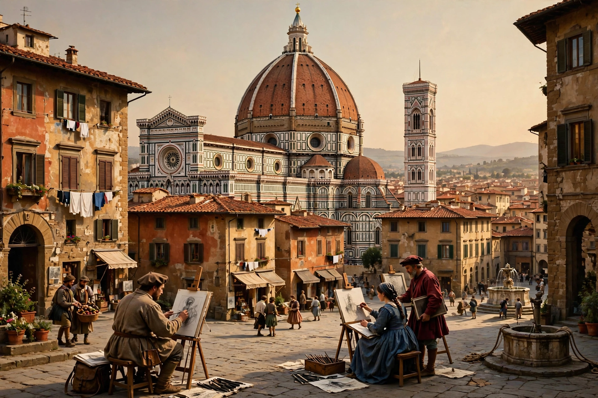

Renaissance

The Renaissance is a period in European history marking the transition from the Middle Ages to modernity, covering the 15th and 16th centuries and characterised by a revival of interest in the art, literature and learning of classical antiquity.
It began in Italy — above all in Florence, where banking wealth (notably the Medici) patronised artists and scholars — and spread across Europe. Its emblematic figures include Leonardo da Vinci, Michelangelo, Raphael, Dante and Petrarch (as forerunners), Machiavelli, and the scholars of humanism. Gutenberg's press carried its ideas far and fast.
Art and thought
Renaissance art developed linear perspective, naturalism and the study of anatomy, producing the Mona Lisa, the Sistine Chapel ceiling and Brunelleschi's dome in Florence. Humanists such as Erasmus revived classical texts and criticised medieval scholasticism, even as most remained Christians.
Impact
The Renaissance reshaped art, architecture, politics, science and literature, and accompanied the Age of Discovery, in which European voyagers reached the Americas and opened sea routes to Asia.